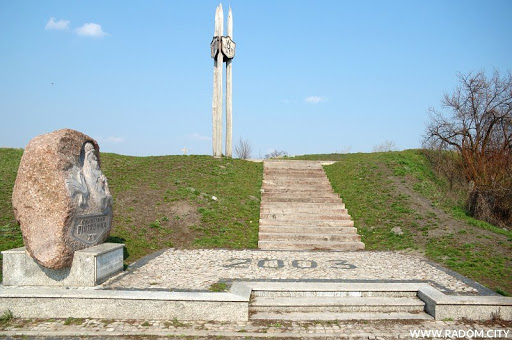

Grodzisko Piotrówka
Grodzisko „Piotrówka” z przeł. IX/X w. uznane za kolebkę dzisiejszego Radomia, pozostałość po kasztelanii radomskiej; na przełomie XVIII/XIX w. cmentarz grzebalny dla starego i nowego Radomia. Nazwa pochodzi od pierwszego kościoła rzymsko-katolickiego pod wezwaniem św. Piotra (X/XI w.). Obecnie pomnik - głaz narzutowy z wizerunkiem Mieszka I i z pierwszym godłem Państwa Polskiego, nawiązujący do początków tworzenia się państwa.